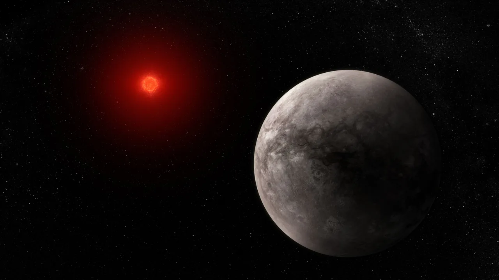

27. März 2023
Temperatur eines Gesteinsplaneten gemessen: TRAPPIST-1 b
Das Planetensystem TRAPPIST-1 in 40 Lichtjahren Entfernung besteht aus sieben Gesteinsplaneten etwa von der Größe der Erde, von denen drei in der habitablen Zone liegen. Mit dem MIRI-Instrument des James Webb Space Telescope wurde die Wärmestrahlung des innersten Planeten TRAPPIST-1 b gemessen, als er hinter seinem Stern verschwand. Seine Tagseite ist etwa 500 K heiß. Das passt am besten zu einem Planeten ohne nennenswerte Atmosphäre, die Wärme vom Tag zur Nachtseite transportieren könnte.
Quelle: ESA/Webb: "Webb measures the temperature of a rocky exoplanet." Online; esawebb.org; 27.03.2023